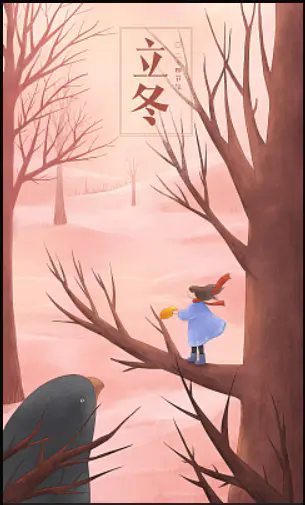

词：汪苏泷
曲：汪苏泷
汪：摘一颗苹果
等你从门前经过
送到你的手中帮你解渴
BY2：像夏天的可乐
像冬天的可可
你是对的时间对的角色
汪：已经约定过
一起过下个周末
你的小小情绪对我来说
BY2：我也不知为何
伤口还没愈合
你就这样闯进我的心窝
是你让我看见干枯沙漠开出花一朵
汪：是你让我想要每天为你写一首情歌
BY2：用最浪漫的副歌
汪：你也轻轻的附和
BY2：眼神坚定着我们的选择
是你让我的世界从那刻变成粉红色
汪：是你让我的生活从此都只要你配合
Yumi：爱要精心来雕刻
汪：我是米开朗基罗
合：用心刻画最幸福的风格
BY2：用时间 去思念 爱情有点甜
这心愿 不会变 爱情有点甜
汪：已经约定过
一起过下个周末
你的小小情绪对我来说
Miko：我也不知为何
伤口还没愈合
你就这样闯进我的心窝
Yumi：是你让我看见干枯沙漠开出花一朵
汪：是你让我想要每天为你写一首情歌
BY2：用最浪漫的副歌
汪：你也轻轻的附和
合：眼神坚定着我们的选择
Miko：是你让我的世界从那刻变成粉红色
汪：是你让我的生活从此都只要你配合
Yumi：爱要精心来雕刻
汪：我是米开朗基罗
合：用心刻画最幸福的风格
Yumi：是你让我看见干枯沙漠开出花一朵
汪：是你让我想要每天为你写一首情歌
Yumi：用最浪漫的副歌
汪：你也轻轻的附和
合：眼神坚定着我们的选择
BY2：是你让我的世界从那刻变成粉红色
汪：是你让我的生活从此都只要你配合
BY2：爱要精心来雕刻
汪：我是米开朗基罗
合：用心刻画最幸福的风格
用心刻画最幸福的风格
